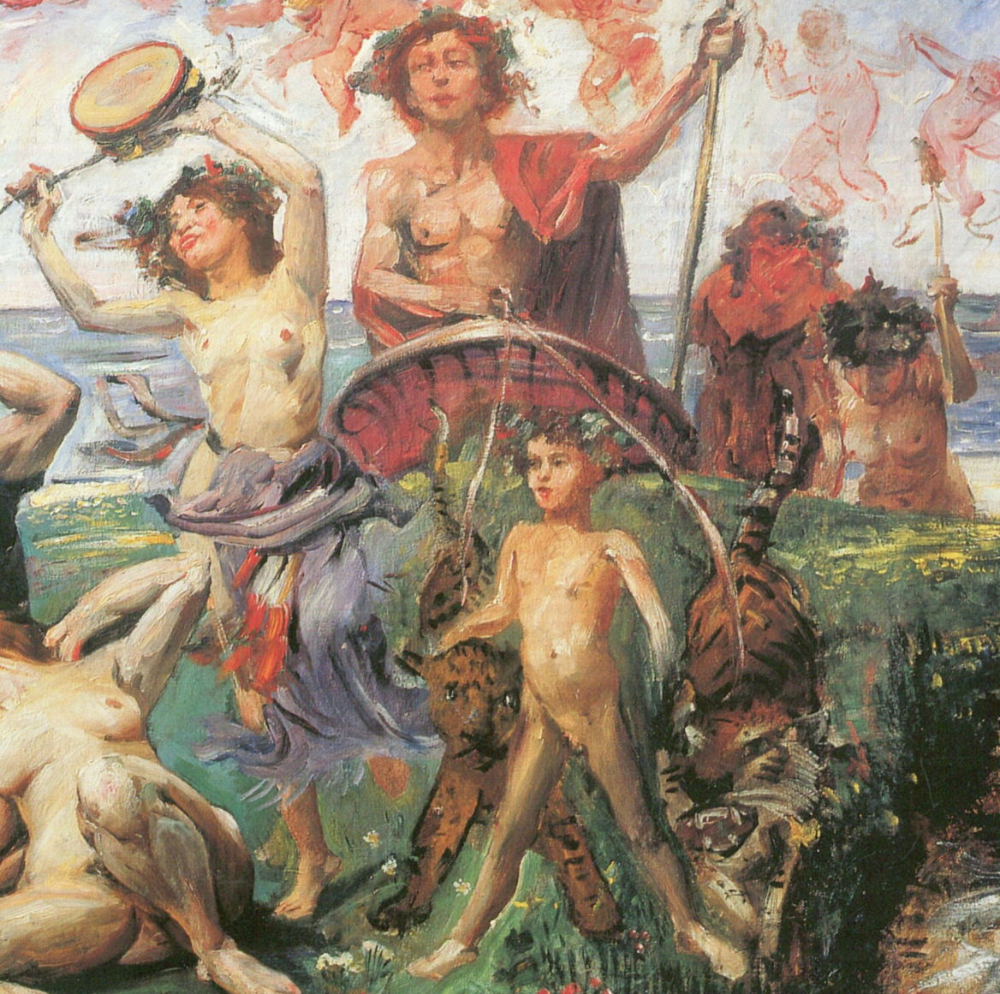

Dionysus, known as Bacchus in Roman mythology, is the Greek god of wine, ecstasy, and theater. He was the
son of Zeus’ affair with Semele and, as a result, spent his childhood on Mt. Nysa away from Hera’s wrath. He’s most
well known for
his cult-like following as well as his lavish festivals - he’s even credited for giving humans wine. His
cult’s interest
in literature and art would eventually inspire performances that paralleled modern theater.
Significance of Dionysus
Dionysus’ story focuses on one’s self-indulgence and overconsumption on worldly luxuries. His cult-like
following of women draws
parallels to addictive personality and excessive desire. His representation of escapism through
indulgence is widely applicable
towards many works of literature and reflects Dionysus’ roots in the Escapist archetype. While mental
escapism develops in
characters differently, Dionysus represents the usage of materialistic goods as a form of escapism.
Literary Example
Ode to a Nightingale - John Keats, 1819
“Away! away! for I will fly to thee,
Not charioted by Bacchus and his pards,
But on the viewless wings of Poesy,” (31-33)
Keats’ allusion to Bacchus, a rejection of the gods’ values of wine, intoxication, and pleasure,
illustrates the speakers’
denial of Bacchus’ escapism as a way to deal with his tiring consciousness. Instead of indulging in the
bliss of wine and
inebriation, the speaker instead turns to poetry as a way to escape his existential suffering. The
allusion serves to represent
the tantalizing escapes of pleasure and drunkenness, ultimately illustrating that one can only find true
contentment through
healthy and meaningful methods, not through seemingly pleasurable intoxication.